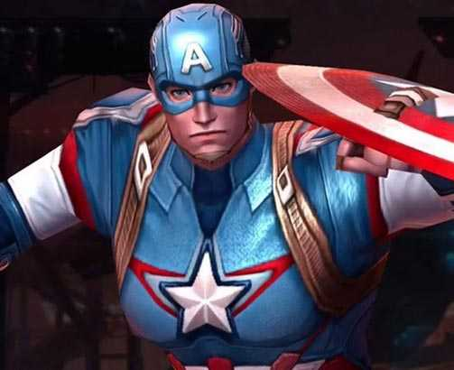

Historia do Personagem Steve Rogers, nascido em 4 de julho de 1918, depois que renasceu na Era Moderna, teve muitas dificuldades para se adaptar a vida civil. No início morava na mansão dos Vingadores e era praticamente um super-herói de tempo integral. Continuou nesse ritmo quando se aliou a S.H.I.E.L.D e teve um romance com a Agente 13. Somente no fim da década de 1960, Steve Rogers começou a buscar uma vida própria. Um desentendimento com Nick Fury o fez se afastar da espionagem. Comprou uma motocicleta e saiu em viagem pelo interior do país. Retornaria depois que o Caveira Vermelha voltou a atacar. Depois Steve entra para a força policial de Nova York, mas logo tem a sua vida conturbada em função de acusação de que era corrupto, pois quase não aparecia para as rondas e mesmo assim não era demitido (seus superiores conheciam sua identidade). O acusador era seu parceiro, que logo se descobriu que agia como o vilão Chefe Encapuzado.
Já há tantos homens grandes lutando nesta guerra, pode ser que precisamos de um pequeno.
Capitão America
